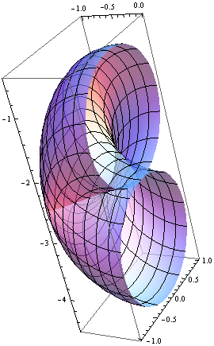
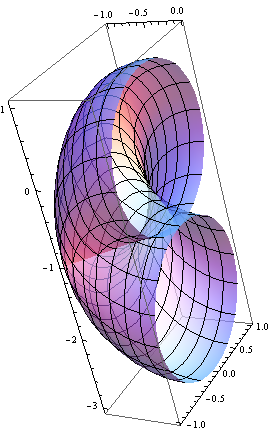
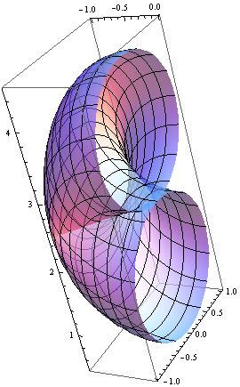
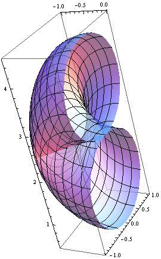
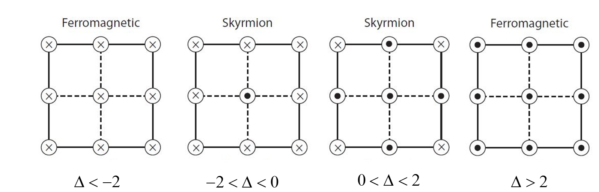
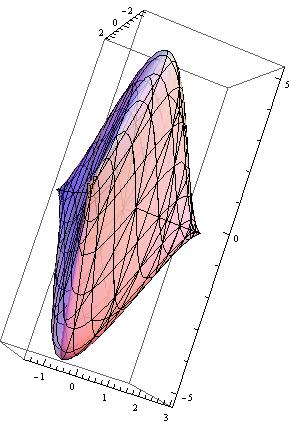
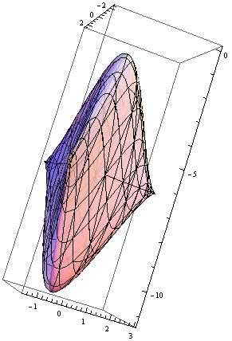
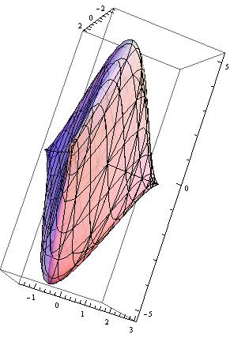
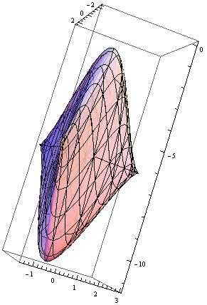

Lecture 3 : Chern Insulator¶
Quantum Hall Insulator¶
The first Topological Insulator is shown in Integer quantum Hall effect. For 2D electron gas (2DEG), by applying a B field perpendicular to the 2D plane, we get plateaus of Hall conductance \(\sigma_{xy}=1/\rho_{xy}\) which is quantized in \(\nu e^2/h\). In the same time, \(\rho_{xx}=\sigma_{xx}=0\) (which may seems counterintuitive, but noticing the tensor nature of \(\rho\) and \(\sigma\)). The quantization of \(\sigma_{xy}\) is very accurate, it is the second best way to measure the fine structure constant, and it is inert to interactions and impurities. For a charge neutral particle in 2D:
with \(H_0=\frac{\hat{p}^2}{2m}\).
In a magnetic field with a vector potential \(\vec{A}\), we have \(H=\frac{(\hat{p}-e\vec{A})^2}{2m}\).
For a constant uniform magnetic field, choose Landau gauge: \(A_x=0, A_y=Bx\), we have
\(H\) is invariant under translations along the y axis, so \([p_y,H]=0\), we can write the eigen states of \(H\): \(\psi=f(x)exp(ik_yy)\) and \(H\psi=\epsilon\psi\). which gives:
\(\phi_n(x)\) satisfies the harmonic oscillator potential \(V(x)=\frac{k}{2}x^2\) with \(k=e^2B^2/m, x_0=\frac{\hbar k_y}{eB}\). The eigen energies are the famous harmonic one:
Some comments
- Landau levels are highly degenerated, they form energy bands with \(n\) denotes band index and \(k_y\) the momentum, all the states with the same \(n\) (but different \(k_y\)) have the same energy (flat bands).
- The degeneracy of each Landau level is \(D=(2S+1)\frac{\Phi}{\Phi_0}\), where \(S\) denotes spin, and \(\Phi_0\) is the magnetic flux quanta with \(\Phi_0=h/e\).
- We can also use symmetry gauge: \(A_x=-\frac{By}{2}, A_y=\frac{Bx}{2}\), though it is more cumbersome, the physics is quite insightful. More on symmetry gauge, see[1].
Edge states with Quantization of the Hall conductivity¶
Electrons at the edge can move along the edge in one direction, this edge states gives quantized Hall conductivity.
At top edge: \(N=\int \frac{dpdr}{2\pi\hbar}=L\int \frac{dp}{2\pi\hbar}\), we get
We have use the relation \(v_F=\frac{\partial E(k)}{\hbar \partial k}=\frac{\mu_{top}-\mu}{\hbar(k_{Ftop}-k_F)}\)
Net current for top edge:
We have used \(\mu_1-\mu_2=e(V_1-V_2)\). And, similarly, we have \(I_{bottom}=I_{top}\), that gives
If one has \(n\) copies of edge states, then total Hall conductivity is:
Half BHZ model¶
See the lattice below:  Consider at each site, there are two
orbital modes coupled together, in the tight-binding approximation, we
can write the Hamiltonian:
Consider at each site, there are two
orbital modes coupled together, in the tight-binding approximation, we
can write the Hamiltonian:
Assuming translational invariance along x and y, i.e. \(U(n)=U,T_x(n)=T_x,T_y(n)=T_y\), after Fourier transform: \(c_{n_x,n_y}=\frac{1}{\sqrt{N}}\sum_{k_x,k_y}c_{k_x,k_y}e^{ik_xn_x+ik_yn_y}\) with \(N=N_xN_y, k_xN_x=2\pi m_1,k_yN_y=2\pi m_2\), we get
with
\(U=\Delta\sigma_z, T_x=\frac{1}{2}\sigma_z-\frac{iA}{2}\sigma_x, T_y=\frac{1}{2}\sigma_z-\frac{iA}{2}\sigma_y\), we get
Chern number using \(\mathbf{h}\)¶
Written the Hamiltonian as: \(H(k)=\mathbf{h}\cdot\mathbf{\sigma}\), we get
and we get the eigen-energies:
Set \(A=1\), for some special parameter \(\Delta\), the
dispersion relation shows below: 


From the dispersions also the analysis we can see that Dirac cone
appears at
\(k_x,k_y=0,\Delta=-2; k_x,k_y=0,\pm\pi,\Delta=0; k_x,k_y=\pm\pi,\pm\pi,\Delta=2\).
It means that the monopole seats at \(\mathbf{h}=0\), at each region, we
can calculate the Chern number of the valence band in investigating how
many times does the torus formed by the image of the Brillouin zone in
the space of \(\mathbf{h}\) contail the origin. The Torus for different
\(\Delta=-2.5,-1,1,2.5\) shown below (for clarity, only half of the
torus is shown):    

From \(\mathbf{h}\), we get the Chern number as follow: (Set \(A=1\))
- \(|\Delta|>2, Q=0\)
- \(-2<\Delta<0, Q=-1\)
- \(0<\Delta<2, Q=1\)
As long as the whole band is gapped, we have the same topology and the same Chern number. In the region \(|\Delta|>2\), reminding the Hamiltonian (In what follows, we always consider \(A=1\))
It represent Hamiltonians topologically equivalent to the atomic limit, the limit in which all hoppings are set to zero, as if the lattice constant were infinity. The \(|\Delta|>2\) region is topologically the same phase as the phase \(|\Delta|\to\infty\), which has trivial (momentum-independent) eigenstates and zero Chern number.
Chern number as a Skyrmion number¶
Looking at the vector \(\mathbf{h}\), the
\((h_x(k_x,k_y),h_y(k_x,k_y))\) shows below
To understand the Chern number, we can see if the \(h_z\) component change sign or not in the BZ. If it changes sign, it corresponds to a skyrmion, and the Chern number is non-zero, it is the same as Skyrmion number. If it does not change sign, then the topology is trivial. The value of \(h_z(\mathbf{k})\) at high-symmetry points in the BZ are shown below:  From which we can get the Chern number.
Low-energy Hamiltonian¶
We can also calculate the Chern number using the low-energy Hamiltonian. At \(\Delta=-2\), the energy gap collapses at the \(\Gamma=(0,0)\) point, near this point, we have
For the Hamiltonian \(H(k)=k_x\sigma_x+k_y\sigma_y+m\sigma_z\), we can get the monopole field for \(E_-\)state is
Then we get
Which gives:
Alternatively, from \(\mathbf{B}=\frac{1}{2}\frac{(k_x,k_y,m)}{(k_x^2+k_y^2+m^2)^{3/2}}\),
For \(m>0\) and \(m<0\), the integral region and direction shows below:
Bfield
Note here the Chern number is not an integer, because we used continuous model, and \(k_x,k_y\) can range from \(-\infty\) to \(\infty\), so the band structure \(\pm\sqrt{k_x^2+k_y^2+m^2}\) run riot and never turns back, which should give us another half of the Chern number (though we have no idea is we should add or subtract half-values). But as we can see below, the differences of Chern number between two states gives the right answer.
So from \(\Delta<-2\to \Delta>-2\), \(m<0\to m>0\), we get
Also we know \(\Delta<-2\), \(C=0\), so for \(-2<\Delta<0\), \(C=-1\).
Chern number as an obstruction¶
Write \(\mathbf{h}=|\mathbf{h}|(sin\theta cos\phi, sin\theta sin\phi, cos\theta)\). In principle, for the whole Bloch sphere, we must at least use two different bases which are well defined. If for the whole band, we have \(h_z<0\) or \(h_z>0A\), then, we can use one set of eigen base, which gives us zero Chern number. But for the region \(-2<\Delta<0\), at the point \(\Gamma\), we have \(h_z(0,0)=\Delta+2>0\), \(h_z/h=1=cos\theta\), \(\theta=0\); at the point \((0,\pm\pi)\) or \((\pm\pi,\pm\pi)\), we have \(h_z<0\), \(\theta=\pi\), means we must use two set of eigen bases, denotes no-zero Chern number. The resulting \(\hat{h}=\mathbf{h}/|\mathbf{h}|\) for different\(\Delta=-2.5\to 2.5\) shown below:

Haldane Model¶
Haldane model describe the model of Graphene with real nearest-neighbor-hopping parameters but complex next-nearest-neighbor-hopping parameters resulting from a nonzero magnetic field. But the field is periodic and have zero net flux per plaquette. The real space and reciprocal space shows below (with unit length 1):
lattice
The vectors are:
Set \(\mathbf{b_1},\mathbf{b_2}\) as two base vectors, then the reciprocal lattice spanned by \(\mathbf{b_1^*},\mathbf{b_2^*}\) with \(\mathbf{b_i}\cdot\mathbf{b_j^*}=2\pi\delta_{ij}\), that is
Define \(\mathbf{K}=\frac{1}{3}(\mathbf{b_1^*}+\mathbf{b_2^*})=\begin{pmatrix}-4\sqrt{3}\pi/9\\0\end{pmatrix}, \mathbf{K'}=-\mathbf{K}\).
We get the Hamiltonian:
\(M\) breaks inversion symmetry of \(A\) and \(B\) sublattice, and \(t_2\) is the next-nearest-neighbor coupling, for a staggered magnetic field shows below, it changes \(t_{ij}\to t_{ij}e^{i\frac{e}{\hbar}\int_{j\to i}\mathbf{\mathcal{A}}\cdot d\mathbf{l}}=t_{ij}e^{i\frac{e}{\hbar}\chi\Phi_0}=t_{ij}e^{i\frac{e}{\hbar}\chi\frac{h}{e}}=t_{ij}e^{i\phi}\).
mag
Use \(a_{iA}=\frac{1}{\sqrt{N}}\sum_ka_{kA}e^{i\mathbf{k}\cdot\mathbf{R}_{iA}}, a_{iB}=\frac{1}{\sqrt{N}}\sum_ka_{kB}e^{i\mathbf{k}\cdot\mathbf{R}_{iB}}\), \(N\) is the number of unit cell. Then we can get:
We arrived at
with
Because of the \(C_3\) symmetry, the Dirac cone can only happen at \(K,K'\). At the vicinity of \(K\), we have
At the vicinity of \(K'\), we have
where \(-\pi<\phi<\pi\).
Start from \(M\to \pm\infty\), we have zero Chern number, assuming \(t_2>0, \phi>0\), from the previous results, when \(M\) from \(+\infty\) decreases to \(M=3\sqrt{3}t_2sin\phi\), \(K'\) band close and reopen, the Chern number changes to
Then when \(M>-3\sqrt{3}t_2sin\phi\) to \(M<-3\sqrt{3}t_2sin\phi\), we have
We can do the same calculation for \(\phi<0\), we get the phase chart below:

phase chart
Because \(k_x,k_y\) have no dependence on \(M,t_2,\phi\), \(h_z\) in the range of \((M-3\sqrt{3}t_2sin\phi\to M+3\sqrt{3}t_2sin\phi)\), we can draw a spheroid \(\Sigma'\) with height \(6\sqrt{3}sin\phi\) and center \((0,0,M/t_2)\). We can get the Chern number using following pictures:

spheroid
Also, we can get the Chern number using the whole 3-d picture (set \(\phi=\pi/2, M/t_2=6,0,-6\)):
  
 